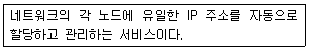

멀티미디어콘텐츠제작전문가 (2018-03-04 기출문제)
1과목: 멀티미디어개론
1. USB 저장장치에 대한 설명으로 틀린 것은?
- PC와 주변장치를 접속하는 버스 규격이다.
- 소형 경량이어서 휴대용 저장장치로 각광을 받고 있다.
- 병렬 버스 형태로 구성되어 있다.
- USB는 Universal Serial Bus의 약자이다.
(정답률: 85%)

2. Client와 Server 간에 FTP 프로토콜을 이용하여, 파일을 교환 하고자 할 때에 사용하는 데이터 전송모드가 아닌 것은?
- 패킷모드
- 스트림모드
- 블록모드
- 압축모드
(정답률: 62%)
3. 근거리 무선통신 규격(IEEE 802.15.4)을 기반으로 블루투스의 저속버전이라고도 불리며, 대규모 센서 네트워크를 구성할 수 있는 무선 통신 기술은?
- RFID
- Wi-Fi
- WLAN
- ZigBee
(정답률: 66%)
4. 디지털 네트워크상에서 멀티미디어에 관련된 종합적인 프레임 워크를 제공하는 기술은?
- MPEG-3
- MPEG-10
- MPEG-5
- MPEG-21
(정답률: 81%)
5. 미국 버클리 대학에서 개발한 센서 네트워크를 위해 디자인 된 컴포넌트 기반 내장형 운영체제로 이벤트 기반 멀티태스킹을 지원하는 것은?
- Tiny OS
- NES C
- Net OS
- OS2
(정답률: 68%)
6. 2개의 서로 다른 이미지나 3차원 모델 사이에 점진적으로 변화해 가는 모습을 보여주는 애니메이션 기법은?
- 모핑
- 도려내기 효과
- 입자시스템
- 과장효과
(정답률: 90%)
7. 포트번호가 443이며, 넷스케이프 사에서 개발한 보안 프로토콜은?
- IP
- SSL
- RDP
- L2TP
(정답률: 82%)
8. 클라우드의 중앙 데이터센터 대신 거리상 가까이 위치한 끝단에서 데이터를 분석하고 이용하는 분산형 클라우드 컴퓨팅 방식은?
- Process Automation
- Edge Computing
- Gopher Service
- Meltdown
(정답률: 83%)
9. 이메일 보안 기술 중 하나인 PGP(Pretty Good Privacy) 에 대한 설명이 아닌 것은?
- 개인이 개발한 보안기술이다.
- 전자우편의 수신부인 방지를 지원한다.
- 기밀성과 무결성 등을 지원한다.
- RSA와 IDEA 등의 암호화 알고리즘을 사용한다.
(정답률: 62%)
10. 사람과 사물, 사물과 사물 간에 지능통신을 할 수 있는 M2M(Machine to Machine) 의 개념을 인터넷으로 확장하여 사물은 물론, 현실과 가상세계의 모든 정보와 상호 작용하는 개념은?
- IoT
- RFID
- VRML
- xHTML
(정답률: 86%)
11. 구글에서 2016년 5월에 발표한 데이터 분석 및 인공지능에 특화된 딥 러닝용 하드웨어는?
- GPU(Graphic Processing Unit)
- TPU(Tensor Processing Unit)
- Nand Flash Memory
- Blockchain
(정답률: 62%)
12. 운영체제에서 실행상태에 있는 프로그램의 인스턴스를 지칭 하는 것은?
- System
- Program
- Record
- Process
(정답률: 80%)
13. 온라인과 오프라인 소비채널을 융합한 마케팅을 통해 소비자의 구매를 촉진하는 새로운 비즈니스 모델은?
- O2O(Online to Offline)
- Open Market
- Closed Market
- Complex Market
(정답률: 82%)
14. EBCDIC 코드는 몇 개의 비트로 구성되는가?
- 4
- 7
- 8
- 16
(정답률: 74%)
15. 데이터 암호를 위한 공개 Key 알고리즘에 속하는 것은?
- DES
- SEED
- RSA
- RC4
(정답률: 70%)
16. 해커가 무선 네트워크를 찾기 위해 무선장치를 가지고 주위의 AP(Access Point)를 찾는 과정을 말하며 무선 랜 해킹과정의 초기단계에 사용하는 방법은?
- Spoofing
- Sniffing
- War Driving
- Analog Dialing
(정답률: 66%)
17. LAN 관련 프로토콜 중 CSMA/CD에 대한 프로토콜은?
- IEEE 802.9
- IEEE 802.5
- IEEE 802.6
- IEEE 802.3
(정답률: 56%)
18. 한 공격자가 여러 시스템을 동시에 사용하여 한 대상을 공격하는 공격의 종류는?
- 스푸핑(SPOOFING)
- 스니핑(SNIFFING)
- 세션 하이재킹(SESSION HIJACKING)
- 분산도스(DDOS)
(정답률: 79%)
19. 다음은 무엇에 대한 설명인가?

- POP
- DHCP
- S/MIME
- SMTP
(정답률: 56%)
20. UNIX 명령 중 도스 명령 “dir”과 유사한 기능을 갖는 것은?
- cp
- dr
- ls
- rm
(정답률: 60%)
2과목: 멀티미디어기획및디자인
21. 다음 중 프리즘을 통과한 백색광에서 무지개색과 같이 연속된 색의 띠로 발견된 것을 무엇이라 하는가?
- CMYK
- RGB
- 파장
- 스펙트럼
(정답률: 87%)
22. 웹 가상 커뮤니티에서 개인을 상징하는 대표적인 심벌로 원래 분신, 화신을 뜻하는 말은?
- 사인(Sign)
- 아이콘(Icon)
- 블릿(Bullet)
- 아바타(Avatar)
(정답률: 82%)
23. 특정 컬러를 표현하는 제한된 색 모드에 대한 설명으로 거리가 먼 것은?
- 이중 톤 모드(duotone) 에서는 2에서 4가지 색상 잉크를 사용하여 이미지를 만든다.
- 비트맵 모드는 두 색상 값 중 하나(Black or White)를 사용하여 이미지 픽셀을 표현한다.
- 그레이스케일 모드는 256레벨의 그레이스케일을 사용하여 이미지를 표현한다.
- 인덱스 색상모드는 최대 216색상을 사용한다.
(정답률: 61%)
24. 다음 중 마케팅 커뮤니케이션의 기능으로 포함되지 않는 것은?
- 정보기능
- 제시기능
- 조정기능
- 구조기능
(정답률: 73%)
25. 2차원에서 모든 방향으로 펼쳐진 무한히 넓은 영역을 의미하며 형태를 생성하는 요소로서의 기능을 가진 것은?
- 점
- 선
- 면
- 입체
(정답률: 74%)
26. 다음 중 웹 2.0 서비스에 해당하지 않는 것은?
- 페덱스(FedEx)
- 위키피디아(Wikipedia)
- 팟캐스팅(PodCasting)
- 소셜 네트워크 서비스(Social Network Service)
(정답률: 68%)
27. 슈브뢸(M.E. Chevreul) 의 색채조화 이론 중 활기찬 시각적 효과를 주고 유쾌한 감정을 유발하는 조화는?
- 반대색의 조화
- 주조색의 조화
- 근접보색의 조화
- 등간격 3색 조화
(정답률: 53%)
28. 다음 중 컴퓨터 애니메이션의 특수효과에 해당하지 않는 것은?
- 모핑(Morphing)
- 로토스코핑(Rotoscoping)
- 입자 시스템(Particle System)
- 벡터 애니메이션(Vector-Based Animation)
(정답률: 60%)
29. 다음 중 아트디렉터의 역할이 아닌 것은?
- 애니메이터
- 프로그래머
- 일러스트레이터
- 그래픽디자이너
(정답률: 83%)
30. 디지털카메라나 스캐너 등의 색채 영상 입력 장비나 컴퓨터 모니터를 포함한 각종 색채 영상 디스플레이 장비에 사용하는 컬러 코드는?
- RGB 코드
- CMYK 코드
- HSB(HSV) 코드
- YUV 코드
(정답률: 68%)
31. 저드의 색채조화 원칙 중 배색에 있어서 공통된 상태와 성질이 있을 때 조화한다는 원리는?
- 질서의 원리
- 동류의 원리
- 친밀의 원리
- 명료의 원리
(정답률: 75%)
32. 인터넷 비즈니스 모델의 구성요소 중 일부이다. 올바른 설명이 아닌 것은?
- Contents : 웹사이트가 가지고 있는 디지털화 된 정보
- Customization : 개별 사용자를 위한 맞춤화 서비스
- Commerce : 웹상에서 이뤄지는 상품 판매 관련 거래
- Communication : 자신들의 공통 관심사에 대하여 의견과 정보를 교환하는 사용자 간의 비공식적인 공동체
(정답률: 61%)
33. 게슈탈트의 심리법칙 중 거리가 가까운 요소끼리 하나의 묶음으로 보이는 것은?
- 근접성의 원리
- 폐쇄성의 원리
- 유사성의 원리
- 연속성의 원리
(정답률: 76%)
34. 그래픽 디자인 요소 중 선에 대한 설명으로 거리가 가장 먼 것은?
- 직선은 수평선, 수직선, 대각선이 있다.
- 색과 결합하여 공간감이나 입체감을 나타낸다.
- 공간에 있는 방향성과 길이가 있다.
- 크기가 없는 점의 연장으로서 점의 이동에 따라 직선, 곡선이 생성된다.
(정답률: 70%)
35. 다음 중 웹 페이지의 이미지 구성요소로 잘못된 것은?
- 로고
- 아이콘
- 메뉴
- 사이트맵
(정답률: 79%)
36. 다음 중 인터넷/웹 기반 서비스가 아닌 것은?
- FTP(File Transfer Protocol)
- Portal Site
- Graphic Tablet
(정답률: 79%)
37. 디자인의 조건 중 최소의 재료와 노력에 의해 최대의 효과를 얻고자 하는 원리는?
- 합목적성
- 질서성
- 경제성
- 독창성
(정답률: 81%)
38. 다음 중 이미지의 구성요소인 픽셀(Pixel)에 대한 설명으로 틀린 것은?
- 픽쳐(Picture) 와 구성요소(Element) 의 복합어다.
- 픽셀은 더 이상 부분으로 나눌 수 없는 개체이다.
- 디지털 시스템과 가장 유사한 이미지는 바로 모자이크다.
- 픽셀은 둘 이상의 값을 갖고 있다.
(정답률: 77%)
39. 시나리오 구성요소와 설명이 바르게 연결된 것은?
- 모티브(Motive) - 삽입장면
- 프롤로그(Prologue) - 영화의 본 내용 뒤에 보여 지는 해설
- 내러티브(Narrative) - 스토리의 구성
- 내레이션(Narration) - 영화의 내용을 소개하는 도입부분
(정답률: 66%)
40. 멀티미디어 디자인을 할 때 각 파일명을 만들 때 잘못된 것은? (문제 오류로 실제 시험에서는 1, 3번이 정답처리 되었습니다. 여기서는 1번을 누르면 정답 처리 됩니다.)
- 파일명에는 공백을 주지 않는다.
- 파일명의 앞부분에는 파일이 속하는 그룹을 표시해 주어 각 파일의 구분에 도움을 준다.
- 파일명은 보안을 위해 사용되는 것이므로 디자이너만이 알 수 있는 암호화된 문자를 사용하면 안 된다.
- 파일의 성격을 파악할 수 있는 파일명을 사용한다.
(정답률: 80%)
3과목: 멀티미디어저작
41. XQuery에 대한 설명으로 틀린 것은?
- Sum과 같은 집계함수를 제공한다.
- SQL과 유사한 SELECT - FROM - WHERE 구조를 유지하고 있다.
- 다양한 내장함수를 제공한다.
- 구조화 된 XML 문서에 대한 복잡한 질의를 수행할 수 있다.
(정답률: 56%)
42. 데이터베이스의 상태를 변환시키기 위하여 논리적 기능을 수행하는 하나의 작업 단위는?
- 프로시저
- 모듈
- 트랜잭션
- 도메인
(정답률: 63%)
43. AJAX에 대한 설명으로 틀린 것은?
- SOAP / XML 등 SW 통신 프로토콜을 이용
- XML과 XSLT를 이용한 데이터 교환 및 변경
- XMLHttpRequest를 이용한 비동기 데이터 검색
- 모든 것을 결합시켜 정리해 주는 ASP Script 사용
(정답률: 57%)
44. HTML5의 기능에 대한 설명으로 틀린 것은?
- Web Database : 표준 SQL을 사용해 질의할 수 있는 DB 제공
- Web Worker : 웹 어플리케이션과 서버 간의 양방향 통신기능 제공
- Web Storage : 웹 어플리케이션에서 데이터를 저장할 수 있는 기능 제공
- Web Form : 입력 형태를 보다 다양하게 제공
(정답률: 60%)
45. 자바스크립트의 변수에 대한 설명으로 맞는 것은?
- 변수를 사용하기 위해서는 반드시 먼저 변수 형을 선언하여야 한다.
- 문자열과 정수를 더하면 정수가 된다.
- 숫자로 시작되는 변수명을 사용할 수 있다.
- 밑줄( _ )로 시작되는 변수명을 사용할 수 있다.
(정답률: 53%)
46. 스타일시트의 텍스트 문자 속성에 대한 설명으로 틀린 것은?
- Text-Align : 글자를 정렬한다.
- Text-Decoration : 글자에 밑줄 등을 지정한다.
- Text-Indent : 소문자를 대문자로 변환한다.
- Text-Spacing : 글자와 글자 사이의 간격을 지정한다.
(정답률: 68%)
47. 액션스크립트 3.0의 접근 제어자 종류가 아닌 것은?
- Private
- Protected
- Internal
- Packaged
(정답률: 53%)
48. 자바스크립트에서 문자열의 특정 위치에 있는 한 개의 문자를 찾아내려 할 때, 사용하는 문자열 객체 메소드는?
- charAt( )
- ArrayOf( )
- replace( )
- search( )
(정답률: 74%)
49. 데이터베이스의 물리적 설계에 포함되지 않는 것은?
- 저장 레코드 양식 설계
- 트랜잭션 인터페이스 설계
- 레코드 집중의 분석 및 설계
- 접근 경로 설계
(정답률: 48%)
50. 이미지를 인식하지 못하는 브라우저나 이미지 보기 옵션이 꺼져있을 경우 이미지 대신 텍스트를 넣어서 그 이미지가 무엇인지 알 수 있도록 해 주는 태그는?
- PRE
- ALT
- ALIGN
- UL
(정답률: 64%)
51. 현재 HTML 문서의 모든 태그를 선택하는 Jquery 표현식은?
- $('SQL#')
- $('.')
- $('*')
- $('HTML')
(정답률: 65%)
52. 붕어빵을 만드는 붕어빵 틀에 비유되는 객체 모델의 개념은?
- 캡슐화
- 정보은닉
- 클래스
- 인스턴스
(정답률: 58%)
53. 자바스크립트 연산자 중 우선순위가 가장 낮은 것은?
- !=
- ||
- ( )
- &&
(정답률: 59%)
54. 릴레이션 R1에 속한 애트리뷰트의 조합인 외래키를 변경하려면 이를 참조하고 있는 R2의 릴레이션의 기본키도 변경해야 하는데 이를 무엇이라고 하는가?
- 카디널리티
- 개체 무결성
- 참조 무결성
- 기본키
(정답률: 58%)
55. 하이퍼시스템의 구성요소인 링크에 대한 설명으로 틀린 것은?
- 노드 간의 연결 관계를 형성하는 역할을 한다.
- 문서 참조를 위한 연결기능을 담당한다.
- 표, 그림 등의 항목들을 관련정보와 연결한다.
- 주제를 표현하기 위한 기본 단위이며, 정보의 저장 단위이다.
(정답률: 73%)
56. DTD 명세를 확장하고 개선한 것으로, XML 문서의 내용과 구조를 정의하기 위해 사용되는 것은?
- XSLT
- XPath
- XML Schema
- SAX
(정답률: 66%)
57. 다음 SQL 문장 중 column1의 값이 널 값(Null Value) 인 경우를 검색하는 문장은?
- select * from ssTable where column1 is null;
- select * from ssTable where column1 = null;
- select * from ssTable where column1 EQUALS null;
- select * from ssTable where column1 not null;
(정답률: 56%)
58. HTML5에서 사용자의 위치정보를 알려주는 API는?
- Publication
- Geolocation
- Localization
- Weblocation
(정답률: 57%)
59. HTML5에서 지정한 문자로 끝나는 속성에 대해서만 스타일을 적용하는 속성 선택자는?
- $
- ~
- &&
- ##
(정답률: 57%)
60. 다음 중 Canvas에 2차 베이지어(Bezier) 곡선을 그리는 HTML5 함수는?
- beginfillRect( )
- contxtmoveTo( )
- quadraticCurveTo( )
- curvelineTo( )
(정답률: 53%)
4과목: 멀티미디어제작기술
61. 사람의 허리로부터 상반신을 담은 촬영기법은?
- 바스트 샷(Bust Shot)
- 웨이스트 샷(Waist Shot)
- 클로즈 업(Close Up)
- 풀 샷(Full Shot)
(정답률: 69%)
62. 사운드 편집에서 룸 톤(Room Tone) 에 대한 설명으로 거리가 먼 것은?
- 인위적으로 조성한 음향효과 이다.
- 룸 노이즈(Room Noise) 라고도 한다.
- 엠비언트 사운드(Ambient Sound) 의 일종이다.
- 특정 방(Room) 이나 세트 안에서 발생하는 소음이다.
(정답률: 65%)
63. 다음 NURBS sphere의 다음과 같이 선택된 구성요소 중 UV 선상의 CV의 외곽을 한꺼번에 조절할 수 있는 구성요소는?
- Hull
- Isoparm
- Edit Point
- Control Vertex
(정답률: 54%)
64. 스레숄드(Threshold) 이상의 오디오 신호가 들어오면 회로를 통과시키고, 그 이하의 신호는 통과되지 못하도록 회로를 닫는 원리로 작동하는 시그널 프로세서는?
- 리미터(Limiter)
- 노이즈 게이트(Noise Gate)
- 덕커(Ducker)
- 디에서(De-esser)
(정답률: 63%)
65. 아날로그 파형을 디지털 형태로 변환하는 과정에서 발생하는 화이트 노이즈를 인위적으로 첨가하여 양자화 잡음과 음의 왜곡을 줄이는 방법은?
- 디더링
- 클리핑
- 앤티앨리어싱
- 절환오차
(정답률: 56%)
66. 디지털비디오 촬영기술 중 화면을 구성하는 구도의 원칙이 아닌 것은?
- 헤드 룸(Head Room) 유지 원칙
- 리드 룸(Lead Room) 유지 원칙
- 3등분의 원칙
- 앵글 고정 원칙
(정답률: 68%)
67. 다음 중 점토를 사용하는 애니메이션을 무엇이라 하는가?
- 셀 애니메이션
- 입자 시스템
- 로토스코핑
- 클레이 애니메이션
(정답률: 86%)
68. 대역폭이 적은 통신매체 에서도 전송이 가능하고 양방향 멀티미디어를 구현할 수 있는 A/V(Audio/Video) 표준 부호화 방식으로, 64kbps급의 초저속 고압축률 실현을 목적으로 하는 동영상 압축 표준안은?
- MPEG-1
- MPEG-2
- MPEG-4
- MPEG-7
(정답률: 57%)
69. GIF(Graphic Interchange Format) 에 대한 설명으로 옳지 않은 것은?
- 높은 압축률과 빠른 실행 속도가 장점이다.
- 압축방식은 LZW(Lempel - Ziv - Welch) 알고리즘을 사용한다.
- 색상정보는 그대로 두고 압축하기 때문에 사진압축에 가장 유리한 방법이다.
- 미국 Compuserve 사에서 자체 개발 서비스를 통해 이미지를 전송할 목적으로 개발되었다.
(정답률: 64%)
70. 다음 중 1889년 토머스 에디슨이 창안한 영사기는?
- 키네토스코프
- 뮤토스코프
- 씨네마토그라프
- 고우몬
(정답률: 66%)
71. 비디오를 압축할 때 고려사항이 아닌 것은?
- 초당 필요 Frame 수
- 압축률에 따른 화질의 변화
- 압축 및 복원 속도
- 플러그인 적용여부
(정답률: 70%)
72. 3차원 그래픽 생성과정으로 올바른 것은?
- 투영 → 모델링 → 렌더링
- 렌더링 → 모델링 → 투영
- 모델링 → 투영 → 렌더링
- 모델링 → 렌더링 → 투영
(정답률: 54%)
73. 애니메이션 제작 기법 중 두 개의 키 프레임 사이의 중간단계를 자연스럽게 연결하여 전체 애니메이션을 만드는 기법은 어느 것인가?
- 레이어
- 트위닝
- 렌더링
- 포지션
(정답률: 79%)
74. 앞 컷이 사라져 가는데 맞추어 다음 컷이 조금씩 나타나는 기법으로 컷과 컷이 자연스럽게 연결되도록 하는 장면 전환 기법은?
- 페이드 인
- 디졸브
- 프리즈 프레임
- 페이드 아웃
(정답률: 79%)
75. 사운드를 구성하는 3요소가 아닌 것은?
- 진폭(Amplitude)
- 음색(Tone Color)
- 주파수(Frequency)
- 미디(Midi)
(정답률: 75%)
76. 다음 중 가상현실을 구성하는 요소와 거리가 먼 것은?
- 몰입감
- 정체감
- 상호작용
- 자율성
(정답률: 71%)
77. 현실감 있는 애니메이션 동작을 위하여 움직임에 흐릿한 잔상을 표현하는 기법은?
- 모션 블러(Motion Blur)
- 모션 매스(Motion Math)
- 모션 트래킹(Motion Tracking)
- 모션 트위닝(Motion Tweening)
(정답률: 77%)
78. 다음 중 렌더링(Rendering) 기법에 속하지 않는 것은?
- Z 버퍼 기법
- 모핑 기법
- 카툰 렌더링
- 레이트레이싱 기법
(정답률: 44%)
79. 호주의 블리스(C.K. Bliss) 가 발명한 것으로 블리스 심볼릭스(Bliss symbolics)라고도 불리는 국제적인 그림 문자 시스템은?
- 아이소타입(Isotype)
- 시멘토그래피(SementoGraphy)
- 포노그램(Phonogram)
- 다이어그램(Diagram)
(정답률: 62%)
80. 이미지와 그래픽에서 점, 선, 곡선 그리고 원 등이 기하학적 객체로 표현되어 화면 확대 시 화질의 저하가 발생하지 않는 그래픽 방식은?
- BMP
- Vector
- Painting
- Raster Graphic
(정답률: 80%)